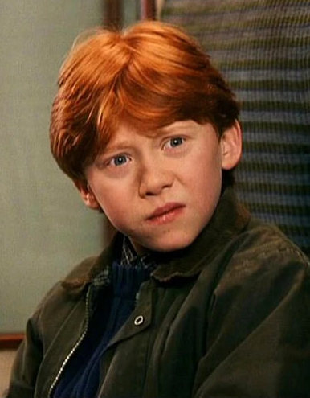
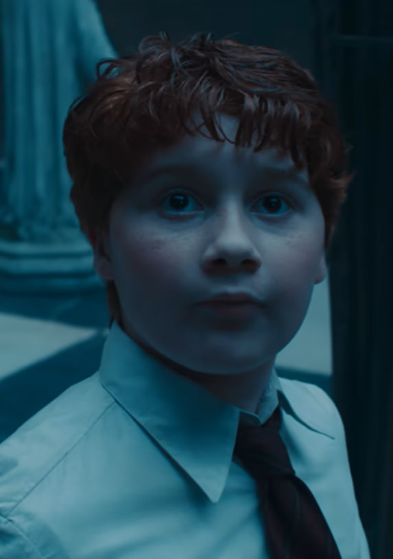

Adaptacja filmowa

W filmach Ron (Rupert Grint) został sprowadzony głównie do roli komicznej. Wiele jego najlepszych momentów strategicznych i wiedza o świecie czarodziejów zostały oddane Hermionie, przez co filmowy Ron częściej jawi się jako przestraszony i niezdarny przyjaciel.
Adaptacja serialowa

Format serialu daje szansę na rehabilitację Rona. Książkowy Ron to wybitny strateg szachowy, niezwykle lojalny przyjaciel znający świat czarodziejów od podszewki, który potrafi stanąć w obronie bliskich nawet ze złamaną nogą. Oczekujemy powrotu jego prawdziwego charakteru.